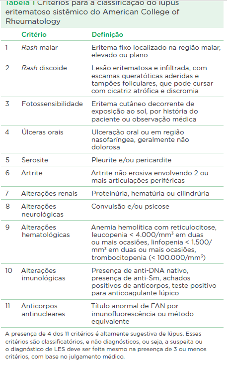

é uma doença autoimune, multisistêmica, crônica e potencialmente grave que pode se manifestar e evoluir de diversas formas. Caracterizada por inflamação, produção de anticorpos antinucleares, como anti-DNA de cadeia dupla (anti-dsDNA), depósitos de imunocomplexos fixadores de complemento, que podem levar a lesões a praticamentequalquer órgão ou tecido.
Quase metade (45%) das manifestações são sistêmicas, 50% são cutâneas e os outros 4% são mistos e os outros 1% são induzidos por drogas ou neonatais.
Cerca de 10 a 20% dos casos de Lupus são pediátricos e ocorrem em uma proporção de 5 meninas para 1 menino (5:1), principalmente na puberdade, raramente antes dos 5 anos.
O LES é uma doença complexa caracterizada por desregulação tanto da imunidade inata quanto da adquirida. Sugere-se que haja deficiência do complemento, produção exagerada de interferon alfa e eliminação defeituosa dos materiais intracelulares resultantes de processos de apoptoses, permitindo a apresentação destes como antígenos e produção persistente e excessiva de citocinas pró-inflamatórias.
São estes os critérios sugestivos, é preciso a presença de 4 de 11 para que seja altamente sugestiva de lúpus, porém, o grau de suspeição depende da avaliação médica.
Em 50% dos pacientes não há comprometimento orgânico significativo, cursando apenas com sintomas constitucional (mal estar, fadiga, febre), cutâneas (rash) ou musculoesqueléticas (artralgia, mialgia), o que dificulta o diagnóstico e pioram a qualidade de vida.
Os outros 50% que apresentam acometimento orgânico geralmente manifestam lesão renal, de sistema nervoso e cardiovascular e estão associados a alta morbidade e mortalidade, como tromboses, doenças cardiovasculares, renais e infecciosas.
O LES pediátrico é mais grave que no adulto, pois mais frequentemente cursa com infecções, serosites, visceromegalias, quadros neuropsiquiátricos, alterações da função renal e cardíacas.
É ainda mais grave se associada à Síndrome antifosfolípide
Cerca de 20-75% dos pacientes desenvolvem nefrite, com 18 a 50% destes progredindo para doença renal avançada.
Geralmente ocorre nefrite aguda com hematúria, hipertensão e proteinúria. A proteinúria pode variar de moderada a nefrótica e pode ser determinada pela relação proteinúria/creatinúria em amostra única, sendo definida como níveis superiores a 0,2mg/mg, enquanto os níveis nefróticos são superiores a 2-3 mg/mg.
Os pacientes com nefrite lúpica grave podem evoluir para insuficiência renal cônica com suas sequelas. As biópsias renais precoces estão indicadas nos casos de alterações urinárias e repetindo para avaliar efetividade terapêutica.
É indicado a utilização de inibidor da enzima conversora de angiotensina (IECA) para pacientes com proteinúria leve e função renal preservada.
Para pacientes com proteinúria a níveis nefróticos ou disfunção renal, há indicação de imunossupressão, feita com corticoides, micofenolato, ciclofosfamida, tacrolimo e ciclosporina.
Para manutenção, podem ser utilizados azatioprina, hidroxicloroquina ou os imunobiológicos como rituximabe, abatacepte.
Pacientes de raça negra com proteinúria a níveis nefróticos e diminuição na taxa de filtração glomerular possuem mau prognóstico.
As lesões cutâneas típicas do LES são úteis no diagnóstico e cerca de 85% dos pacientes manifestam-nas. O rash malar é típico, em asa de borboleta, ocorre em 30% dos casos. Outro rash típico é a lesão discoide. Alguns pacientes podem apresenta o fenômeno de Raynaud.
Podem estar presentes vasculites, livedo reticular, petéquias ou púrpuras secundárias a trombocitopenia, alopécia e eritema de palato duro.
Deve-se evitar o sol, porém, recomenda-se a utilização de corticosteroides tópicos e orais, como tacrolimo. Podem ser utilizados hidroxicloroquina, dapsona e azatioprina.
Pacientes com LES geralmente apresentam artralgia e mialgia, artrite não erosiva nas pequenas articulações das mãos. A tenossinovite das mãos podem levar a deformidades. Alguns pacientes iniciam o quadro com artrite crônica e evoluem para LES algum tempo depois, porém, são reversíveis e resolvem-se com o tratamento da doença de base.
A cefaleia é a principal manifestação na criança e costuma aparecer no início da doença, geralmente é de forte intensidade e contínua, podendo significar desde aumento da pressão intracraniano, alterações vasculares ou infecção. Podem associar-se manifestações psiquiátricas, psicose, alucinações visuais e auditivas, que devem ser tratados com psicotrópicos e imunosupressão, sendo a ciclofosfamida a droga de escolha.
A vasculite observada na doença cerebrovascula lúpica é tipocamente de pequenos vasos, invisíveis em angiografias, por outro lado, as vasculites de vasos médios, geralmente manifesta-se por cefaleia, convulsão e déficit neurológico, que podem ser observados em angiografias.
As convulsões são manifestações neurológicas comuns e podem associar-se com doença cerebro vascular, hipertensão, causas metabólicas ou infecciosas.
O tratamento do acometimento neurológico é de urgência e realizado com altas doses de corticosteroides e ciclofosfamida. A manutenção pode ser feita com azatioprina ou micofenolato, além de sintomáticos e profilaxia para cefaleia.
A manifestação mais comum é a pericardite. Em casos leves, trata-se com anti-inflamatórios não esteroidais e/ou corticoides. Em casos graves ou recorrentes, utilizar metilprednisolona endovenosa, associado ou não a imunossupressores.
A miocardite pode estar presente e deve ser considerada. Deve-se suspeitar quando há presença de hipocinesia focal ou global ou redução da fração de ejeção ventricular esquerda no ecocardiograma, na ausência de outras causas de miocardiopatia. O tratamento é feito com altas doses de corticosteroides orais e/ou endovenosos. Deve ser feito monitoramento ecocardiográfico periódico.
O risco de doença arterial coronariana é de 4 a 8 vezes maior em pacientes com LES e em mulheres, há propensão de mais de 50 vezes a um infarto, mesmo na ausência de outros fatores de risco como fumo, dislipidemia, hipertensão.
É comum o envolvimento pulmonar, mesmo na ausência de achados radiológicos, cerca de 35% a 84% apresentam função pulmonar alterados, com predomínio do padrão restritivo. Os pacientes com LES apresentam alto risco para a infecção, pois são imunodeprimidos em decorrência do tratamento e/ou atividade da doença. Em casos onde não há definição de foco infeccioso ou há novos infiltrados ou sintomas respiratórios, deve ser utilizado tratamento com antibióticos de amplo espectro, recomenda-se a coleta de cultura de diversos materiais (sangue, urina entre outro), para identificação de bactérias e fungos.
As mais frequentes são anemia da doença crônica, anemia hemolítica autoimune, com teste de Coombs positivo, leucopenia e linfopenia
Em casos de linfopenia acentuada < 500, deve-se investigar infecção subjacente por herpes vírus ou síndrome de ativação macrofágica (SAM).
A SAM, também conhecida como linfo-histiocitose hemofagocítica, é uma condição rara, potencialmente fatal, caracterizada pela produção maciça de citocinas pró-inflamatórias, interleucina 1, fator de necrose tumoral, interferon gama, dentre outras, que geralmente leva a falência de múltiplos órgãos. A presença de hiperferritinemia, é um sinal muito sugestivo de ativação macrofágica. Manifesta-se com febre, hepatoesplenomegalia, pancitopenia, linfadenopatia, aumento de LDH, envolvimento neurológico e coagulopatia de consumo.
A trombocitopenia é menos frequente, presente em cerca de 15% ddos pacientes. Púrpura trombocitopênica pode preceder o surgimento do LES em até 10 anos, nesses casos, tratar com corticoides.
Estão presentes comumentes alterações de coagulação, principalmente se presente o anticoagulante lúpico (ACL), que leva a predisposição a eventos tromboembólicos, principalmente tromboses venosas. A trombose arterial geralmente é secundária a uma vasculit, afetando sobretudo os pequenos vasos da pele.
Incluem dor abdominal, diarreias e/ou vômitos. Devem ser investigadas e diferenciadas, pois podem ou não estar relacionadas à doença de base. Podem, por exemplo, ser secundárias a úlceras, hepatite, colecisite ou secundárias ao Lupus com vasculite mesentérica, ascite, peritonite ou pancreatite.
A manifestação mais comum é o hipotireoidismo. A função tireoideana deve ser avaliada no diagnóstico, anualmente e quando houver suspeitas, se paciente com adinamia e sonolência. Alguns pacientes podem desenvolver diabetes tipo 2 secundário ao uso de corticoides. Pode ocorrer insuficiência suprarrenal por conta do uso prolongado de costicoides. Pode haver atraso no crescimento secundário ao uso de corticoides em pacientes pré-púberes, encontram-se descritas disfunção ovariana, testicular, esterilidade secundárias a agentes imunossupressores.
Podem estar presentes vasculites retinianas, frequentemente associadas a perda visual. Comumente observa-se episclerite e esclerite, ceratoconjuntivite seca e síndrome de Sjogren secundária.
As provas de atividade inflamatória estão elevadas em processo de infecção ou atividade de doença, mais comumente utilizados VHS e PCR. A ferritina aumenta, porém, não tanto como na SAM.
Os anticospos antinucleares estão presentes em mais de 99% das crianças com LES, anti-dsDNA tem alta especificidade para LES. São antícorpos presentes no Lupus: Anti-SM, anti-Ro, anti-La, anti-RNP. A dosagem de complemento é boa para avaliar atividade de doença e prognóstico, C3 e C4 normais têm bom valor preditivo negativo quanto a atividade da doença.